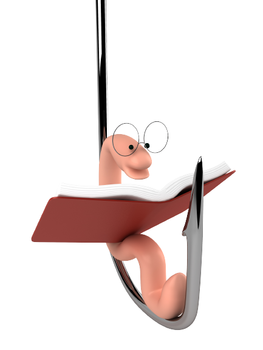
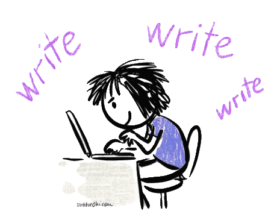

First, before we do anything with the introduction paragraph, we need to write our title. Our title should be something that stands out, hooks the reader in, and relates to what the essay will be about.
Ex. Fear Controls Everything
What You Need:
The introduction is the first part of the essay other than the title. The introduction paragraph is not only to hook the reader in, making them want to read more, but to give a brief summary of the stories along with answer the prompt that was given.
A Hook
Background Information
A Thesis
Hook

The hook is the first and most important sentence of you essay as it starts the entire essay off. It is meant to "hook" the reader in so that they want to read on. Without the hook, readers will not be pulled in and will not want to read the book or essay.
Different Types of Hooks:
Famous Quote - Quote That Is Inspirational and Well-Known
Ex. Dorothy Thompson once said, “The most destructive element in the human mind is fear. Fear creates aggressiveness; aggressiveness engenders hostility; hostility engenders fear, a disastrous circle.”
Statistic - Given Information That Is An Interesting True Fact
Ex. According to NM.org, "You start breathing faster. Even your blood flow changes - blood actually flows away from your heart and into your limbs, making it easier for you to start throwing punches, or run for your life."
Question(Less Used) - Question That Makes the Mind Think and Pulls the Reader In
Ex. How many people in this world actually have a fear and how do they react to it? Do they face the fear calmly or resort to violence?
--There are other ways to right hooks too but these are the easiest and most common--
However, this is not all that you write. Once you are done writing your hook, you also need to add a sentence after it explaining a brief summary on how it realtes back to the prompt.
Famous Quote
Ex. Dorothy Thompson once said, “The most destructive element in the human mind is fear. Fear creates aggressiveness; aggressiveness engenders hostility; hostility engenders fear, a disastrous circle.”
This quote shows how fear is created from humans and is so disastrous that it drives people to commit terrible actions.
Statistical
Ex. According to NM.org, "You start breathing faster. Even your blood flow changes — blood actually flows away from your heart and into your limbs, making it easier for you to start throwing punches, or run for your life"
This statistic shows how people in the world do indeed have a fear and that fear can cause them to be violent.
Question (for this hook, you do not need an explaining sentence)
Background Information

The background information is the usually the second part of the introduction paragraph. It consists of the basic summary of the stories such as the main character and a little bit of information about them. This lets the reader know more about the stories before they read the analysis so that they understand the basis of the rest of the essay. Remember to cite the stories correctly when you state them. Short stories should be in quotes(" ") and plays should be italicized(/).
Ex. In the story, "Dark They Were and Golden Eyed," the main character, Harry, is stuck on Mars along with a couple hundred other people after they fled Earth because of a war. However, over time, things around him are slowly changing and their memories are slowly drifting away. Similarly, in the play "Monsters Are Due on Maple Street," a small community suddenly loses power out of nowhere. However, random activities occur as cars are randomly starting and lights are oddly turning on.
Thesis
The last part of your introduction is your thesis. The thesis is the part of the essay that is the main idea. It is the key statement that all of your body paragraphs would be proving.
What Does A Thesis Includes:
Title of Story Both Stories
Ex. "Dark They Were and Golden Eyed" and /Monsters Are Due on Maple Street/
Authors of Both Stories
Ex. Rad Bradbury and Rod Serling
What Type Of Story It Is (Short, Novel, Article)
Ex. Short Story
Restated Prompt (What The Entire Essay Will Be Proving)
Ex. The characters show how fear caused them to commit tremendous wrongdoings
Putting it Together
In the short stories, “Dark They Were, and Golden-Eyed,” by Ray Bradbury and /The Monsters Are Due on Maple Street/, by Rod Serling, the characters show how fear caused them to commit tremendous wrongdoings.
Putting It All Together (I Used Quotation Hook)
Ex. Dorothy Thompson once said, “The most destructive element in the human mind is fear. Fear creates aggressiveness; aggressiveness engenders hostility; hostility engenders fear, a disastrous circle.” This quote shows how fear is created from humans and is so disastrous that it drives people to commit terrible actions. In the story, "Dark They Were and Golden Eyed," the main character, Harry, is stuck on Mars along with a couple hundred other people after they fled Earth because of a war. However, over time, things around him are slowly changing and their memories are slowly drifting away. Similarly, in the play /Monsters Are Due on Maple Street,/ a small community suddenly loses power out of nowhere. However, random activities occur as cars are randomly starting and lights are oddly turning on. In the short stories, “Dark They Were, and Golden-Eyed,” by Ray Bradbury and /The Monsters Are Due on Maple Street/, by Rod Serling, the characters show how fear caused them to commit tremendous wrongdoings.